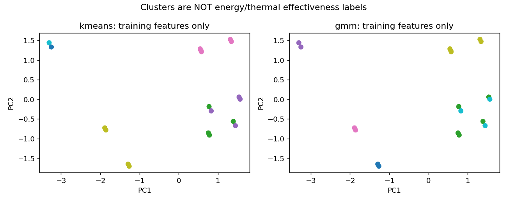

저장된 합성입력 결과의 사후 분석. 새 실측·새 시뮬레이션·독립 확인 아님. 군집은 비용/기한 라벨 없이 fitting, 정책 연결은 개발 성적 사용. 기한 보장/물리모형 개선 아님.

| 방법 | 목적 | 기한 충족 | EFT 충족 | ΔJ | Δ최고AP | 서비스 악화 사례 |
|---|---|---|---|---|---|---|
| kmeans | energy | 6897 | 6897 | -0.000900 | 0.000090 | 0 |
| kmeans | thermal | 6897 | 6897 | 0.040714 | -0.015505 | 0 |
| gmm | energy | 6897 | 6897 | -0.000900 | 0.000090 | 0 |
| gmm | thermal | 6897 | 6897 | 0.040714 | -0.015505 | 0 |